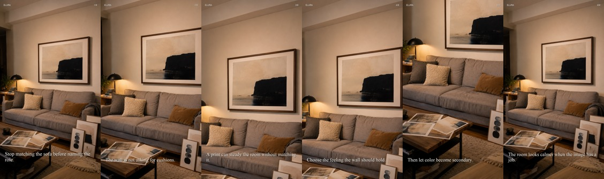

생성 시각: 2026-05-23 01:30 KST. 2시 자동 제작/업로드 전에 타겟 데모그래피 근접도, 전략 적합성, 시각 QA, 공간 연속성을 확인하는 리포트.
Executive Summary
실제 오디언스: 오늘은 post-level 데모가 9/9개 들어왔지만 어제 post-level 기준이 없어 직접 비교는 아직 불가. 현재 표시 demo fit은 71%이며 이는 들어온 post-level 데이터와 나머지 계정 fallback을 섞은 값이다. target market 74.6%, SG 72.8%, 25-44 56.2%, female 80.0%.
콘텐츠 설계: 어제보다 타겟 설계에 가까워짐 (+7p). 이 값은 실제 데모그래피가 아니라 타겟 단서, 전략, 시각 QA, 공간 연속성 기준이다.
그래서 다음 루틴은: SG small-space 2개 슬롯은 유지하고, 오늘처럼 키친/세탁/vanity 등 생활감 있는 공간을 더 넓힌다. 직접 댓글/투표 CTA는 계속 금지하고 저장·멈춤·자기 대입을 목표로 둔다.
today content fit?
리포트에 포함된 콘텐츠들의 종합 적합도입니다. 타겟 명확성, 전략 완성도, 시각 QA, 공간 연속성을 합산합니다. 실제 시청자 데모그래피가 아니라 콘텐츠 설계 점수입니다.
65%
2026-05-22 · 9 posts
vs previous day?
오늘 콘텐츠 설계 점수와 직전 날짜 콘텐츠 설계 점수의 차이입니다. post-level 실제 데모그래피가 들어오면 이 판단을 다시 갱신합니다.
+7p
2026-05-21 58% -> 2026-05-22 65%
actual demo fit?
개별 포스트 데모그래피가 있으면 그 값을 쓰고, 없으면 계정 전체 Studio 데모그래피를 fallback으로 씁니다.
71%
post-level 9/9 posts
Studio demo fit?
TikTok Studio의 계정 전체 최근 시청자/팔로워 데모그래피가 목표 시장, 25-44세, 여성 skew에 얼마나 가까운지 보는 점수입니다.
70%
post-level demo available
viewer target market?
최근 시청자 중 SG/US/AU/CA/GB/NZ, 즉 English-speaking small-space 시장으로 보는 국가 비율입니다.
76.4%
viewer SG?
최근 시청자 중 Singapore 비율입니다. 현재는 SG small-space 수요를 별도 테스트하기 때문에 중요하게 봅니다.
70.1%
routine?
20:30 타겟 오디언스 루틴이 정상 실행됐는지입니다. 이 루틴은 다음 02:00 콘텐츠 생성의 입력값입니다.
completed
scheduled_2030
comment packet?
20:30 루틴에서 준비한 공개 댓글/표면 접촉 후보 수입니다. 현재는 댓글 자체보다 계정이 어떤 표면에 붙는지 학습시키는 용도입니다.
8
next production6
daily upload target
1. Target Audience & New Content Strategy
최근 시청자 분배는 싱가포르로 강하게 열려 있다. SG small-space/HDB/condo/rental 맥락은 유지하되, 거실/홈오피스만 보지 말고 침실, 키친, 욕실, 복도, 세탁공간처럼 사용자의 감각이 반복해서 생기는 작은 생활공간까지 확장한다.
살릴 것
최근 업로드에서 다음 루틴으로 가져갈 콘텐츠 장치다. 고정 원칙이 아니라 실제 post metadata와 업로드 흐름에서 뽑는다.
mirror check signal ruleA bathroom does not need a theme.svc_20260522_s1_sg_bathroom_mirror_signal · cyanotype/photogram · 성과 수집 대기
kitchen not theme rule correctionThe kitchen does not need kitchen art.svc_20260522_s2_sg_kitchen_not_theme · ceramic tile folk mosaic · 성과 수집 대기
receipt line to three material directionsOne private line can become more than one art direction.svc_20260522_s3_receipt_to_three_materials · risograph object poster · 성과 수집 대기
same wall daypart loopSame wall, two times of day.svc_20260522_s4_same_wall_daypart_anchor · linocut/woodcut print · 성과 수집 대기
버릴 것
삭제, 폐기, QA 실패, 낮은 신뢰 신호에서 다음 루틴이 재사용하면 안 되는 요소다.
seven day anchor routineseveral slides used a half-screen dark/dim treatment, many crops/zooms focused on the wrong visual point, and multiple carousels reused the same source image with only text changes.svc_20260521_s6_week_of_small_anchors · discarded user rejected split dim wrong zoom repeated source
comment reading with space anchorDeleted from TikTok Studio after user approved correction: legacy reading/리딩 framing was wrong; replaced with direction-language candidates.elura_rework_20260518_s4_entry_comment_reading · deleted wrong reading language
새롭게 시도하는 것
이전 날짜에 없었거나 신규 슬롯으로 올라온 format/device다. 성과가 들어오기 전까지는 실험으로 표시한다.
receipt line to three material directionsOne private line can become more than one art direction.svc_20260522_s3_receipt_to_three_materials · risograph object poster · 성과 수집 대기
same wall daypart loopSame wall, two times of day.svc_20260522_s4_same_wall_daypart_anchor · linocut/woodcut print · 성과 수집 대기
material swatch to inner role flipMaterial changes what a feeling can hold.svc_20260522_s5_material_swatch_portfolio_flip · scanned paper collage/mixed material portfolio · 성과 수집 대기
random print purchase interruptionBefore another random print fills the wall, name the role the image should hold.svc_20260522_s6_random_print_interrupt · painted wood sign abstraction · 성과 수집 대기
before buying another printDo not buy art to match the wall.svc_20260522_fftest_1_before_buy_wall · ordinary entry wall role anchor · 성과 수집 대기
bathroom signal rule no themeThis bathroom does not need bathroom art.svc_20260522_fftest_2_bathroom_not_theme · small bathroom personal anchor · 성과 수집 대기
do not match the room firstStop matching the sofa before naming the role.svc_20260522_fftest_3_stop_matching_sofa · ordinary sofa wall role anchor · 성과 수집 대기
오늘 업로드 반영
유지svc_20260522_s1_sg_bathroom_mirror_signal
format
mirror check signal rule
reflected
A bathroom does not need a theme.
target
Singapore small-space / HDB or compact condo / English-speaking affluent renter or first home
medium
cyanotype/photogram
유지svc_20260522_s2_sg_kitchen_not_theme
format
kitchen not theme rule correction
reflected
The kitchen does not need kitchen art.
target
Singapore HDB compact kitchen / small-space renter or first flat
medium
ceramic tile folk mosaic
확장svc_20260522_s3_receipt_to_three_materials
format
receipt line to three material directions
reflected
One private line can become more than one art direction.
target
English-speaking affluent small-space renter or first home
medium
risograph object poster
확장svc_20260522_s4_same_wall_daypart_anchor
format
same wall daypart loop
reflected
Same wall, two times of day.
target
English-speaking small-space renter with desk/vanity corner; SG cue via window grille and aircon trunking
medium
linocut/woodcut print
신규svc_20260522_s5_material_swatch_portfolio_flip
format
material swatch to inner role flip
reflected
Material changes what a feeling can hold.
target
English-speaking art-print and small-space decor audience; art-first with no room context required
medium
scanned paper collage/mixed material portfolio
신규svc_20260522_s6_random_print_interrupt
format
random print purchase interruption
reflected
Before another random print fills the wall, name the role the image should hold.
target
English-speaking affluent small-space markets; renters and first homes buying wall art
medium
painted wood sign abstraction
신규svc_20260522_fftest_1_before_buy_wall
format
before buying another print
reflected
Do not buy art to match the wall.
target
target not recorded
medium
ordinary entry wall role anchor
신규svc_20260522_fftest_2_bathroom_not_theme
format
bathroom signal rule no theme
reflected
This bathroom does not need bathroom art.
target
target not recorded
medium
small bathroom personal anchor
신규svc_20260522_fftest_3_stop_matching_sofa
format
do not match the room first
reflected
Stop matching the sofa before naming the role.
target
target not recorded
medium
ordinary sofa wall role anchor
지난 콘텐츠 판정
최근 업로드의 의도 세그먼트는 wall art shoppers, renter / first apartment, living room / sofa wall 쪽으로 읽힌다. 다만 아직 개별 포스트별 성별/연령/국가가 충분히 들어오지 않았으므로, 지금은 “누구에게 보여주려 했는가”와 “실제 계정 오디언스가 어디에 붙었는가”를 분리해서 본다.
다음 제작에 반영
위의 “살릴 것”은 다음 daily6 슬롯의 시작점으로 쓴다. 특히 유지/확장 슬롯은 같은 포맷을 복제하지 말고 첫 프레임 갈등, 공간 마찰, art role을 구체적으로 갱신해야 한다.
다음 제작에서 차단
위의 “버릴 것”에 나온 QA 실패 이유는 새 후보 생성 전 hard guard로 본다. 삭제된 source image, crop logic, art instance, dim treatment는 재사용하지 않는다.
다음 전략
SG small-space 맥락은 유지하되, 다음 리포트부터는 포맷별 성과와 삭제 이유를 누적해 “유지/확장/신규/차단”을 콘텐츠 단위로 비교한다. post-level 수치가 없으면 성과 칸은 대기 상태로 표시한다.
Studio Audience Matrix
Source: TikTok Studio Analytics, last_7_days. 타겟 기준은 SG/US/AU/CA/UK/NZ English small-space market, 25-44세, 홈데코 구매 가능성이 높은 여성 skew다.
Studio market fit?
TikTok Studio의 계정 전체 최근 시청자/팔로워 데모그래피가 목표 시장, 25-44세, 여성 skew에 얼마나 가까운지 보는 점수입니다.
70%
viewer target market?
최근 시청자 중 SG/US/AU/CA/GB/NZ, 즉 English-speaking small-space 시장으로 보는 국가 비율입니다.
76.4%
viewer SG / US?
최근 시청자 중 Singapore 비율입니다. 현재는 SG small-space 수요를 별도 테스트하기 때문에 중요하게 봅니다.
70.1% / 2.4%
viewer 25-44?
목표 연령대인 25-44세 시청자 비율입니다.
61.1%
Recent Viewers
Age
18-2434.7%
25-3452.0%
35-449.1%
45-542.2%
55+2.0%
Locations
SG70.1%
KR8.7%
AU2.9%
MY2.6%
US2.4%
VN2.2%
JP1.1%
GB1.0%
Followers
Age
18-2430.9%
25-3442.4%
35-4417.5%
45-545.9%
55+3.3%
Locations
US54.7%
SG12.5%
CA5.0%
PH4.7%
AU4.3%
MY2.9%
ID2.2%
ZA0.7%
Distribution Signals
Traffic
For You95.4%
Search2.8%
Personal Profile1.6%
Follow0.2%
Sound0.0%
Search
pending--
최근 시청자 분배는 싱가포르로 강하게 열려 있다. SG small-space/HDB/condo/rental 맥락은 유지하되, 거실/홈오피스만 보지 말고 침실, 키친, 욕실, 복도, 세탁공간처럼 사용자의 감각이 반복해서 생기는 작은 생활공간까지 확장한다.
2. Content Generation Evidence
아래 카드는 실제 업로드된 콘텐츠와 그 판단 근거다. 이미지는 직관 확인용이고, 숫자는 “누구에게 닿도록 설계됐는가”와 “시각적으로 업로드 가능한가”를 분리해서 보기 위한 보조 장치다.
공간 기준
완성된 인테리어가 아니라 타겟이 실제로 살 법한 보통 공간을 쓴다. 공간은 주제가 아니라 감각이 매일 다시 보이는 장소다.
아트 기준
한번 쓴 아트 문법은 재사용하지 않는다. 매일 `art_style_passport`로 재질, 색, 구성, 역할이 겹치지 않는지 확인한다.
연속성 기준
같은 공간을 반복해서 보여주면 문, 가구, 벽, 빛 방향이 같은 인스턴스로 유지돼야 한다. 바뀌면 스토리가 깨진다.
6개 루틴
2개는 유지/폐기 반영, 2개는 새 시도 확장, 2개는 아직 안 해본 포맷이다. 새 시도는 방 종류가 아니라 표현 방식의 변화다.

svc_20260522_fftest_3_stop_matching_sofa67%
renter / first apartmentliving room / sofa wallwall art shoppers
uploadedno verified musicpost-level TikTok Studio Viewers API
English-speaking art-print and small-space decor audience; art-first with no room context requireduploadedno verified musicpost-level TikTok Studio Viewers API
home office / desk wallrenter / first apartmentSingapore small-spacebathroom / mirror ritualwall art shoppers
English-speaking small-space renter with desk/vanity corner; SG cue via window grille and aircon trunkinguploadedno verified musicpost-level TikTok Studio Viewers API
renter / first apartmentSingapore small-spaceliving room / sofa wallbathroom / mirror ritualwall art shoppers
Singapore small-space / HDB or compact condo / English-speaking affluent renter or first homeuploadedno verified musicpost-level TikTok Studio Viewers API